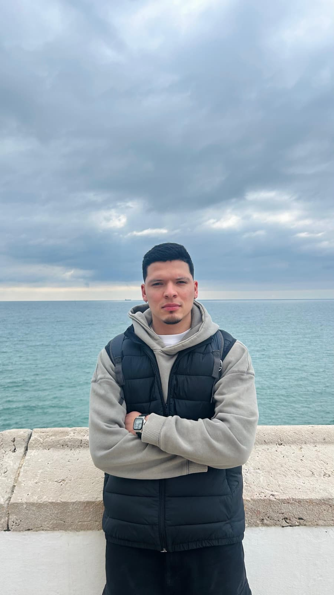
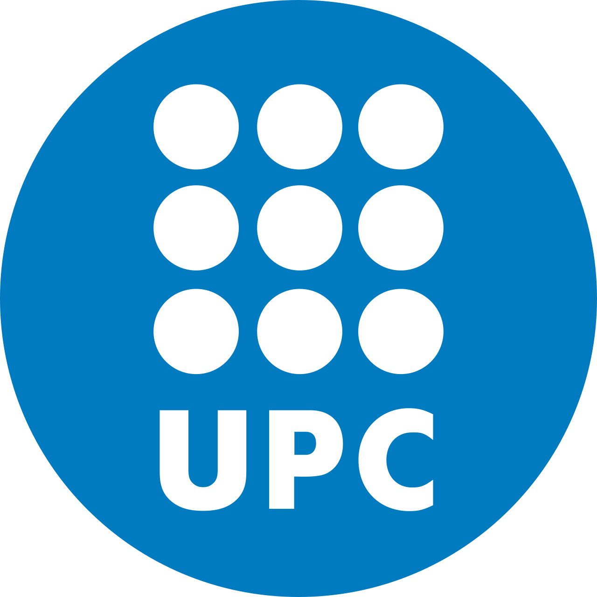

I am a PhD researcher in Automatic Control at Universitat Politècnica de Catalunya (UPC), based in Barcelona. I am interested in how complex physical systems can be modeled, understood, and controlled, especially in the context of sustainable energy and hydrogen production.

My research interests include:

Advanced Modeling and Control of Alcohol Steam Reforming for Clean Hydrogen Production (MARCH)
2026 – 2027
Reference: ILINK25097
Participants: IRI-CSIC, MIT, University of Pisa, TU Dortmund
A Hybrid Phenomenological-Probabilistic Modeling Framework applied to Green Energy and Manufacturing Systems (ProGEMS)
2026 – 2027
Reference: BINAL25005
Participants: IRI-CSIC, UNAL – Medellín (Facultad de Minas)
Sustainable learning-based management of multi-resource large-scale systems (SEAMLESS)
2024 – 2027
Reference: PID2023-148840OB-I00
Participants: UPC